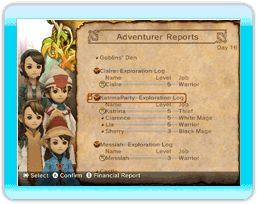
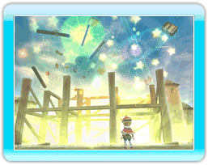

12
|
Tagesablauf eines Königs |
 |
Das Ziel des Spiels ist die Erstellung von Bauwerken und die Erfüllung der Bedürfnisse des Volkes, um das einst so grandiose Königreich wiederherzustellen.
Worauf an den einzelnen Tagen konkret hingearbeitet werden soll, bleibt selbstverständlich dem Spieler selbst überlassen.
Jeder Tag vergeht in Echtzeit, wie von der Uhr oben links auf dem Bildschirm angezeigt. Der Tag endet mit Sonnenuntergang, wenn Chime dem König mitteilt, dass es nun Zeit ist, schlafen zu gehen.  ● Am Morgen Chime präsentiert jeden Morgen einen Bericht über den Vortag. Darin lassen sich meist Hinweise darauf finden, was das Volk benötigt, und der Tag sollte dementsprechend geplant werden. Du kannst auch ein königliches Geheiß erlassen, das am Anschlagbrett veröffentlicht wird - so werden Untertanen auf Missionen ausgeschickt oder zum Jobwechsel veranlasst. |

● Am Tage
Es gibt eine Menge Beschäftigungen in der Burgstadt, zum Beispiel das Aussenden ausgewählter Abenteurer, das Erstellen neuer Gebäude, oder auch Plaudereien mit den Stadtbewohnern. In diesen Gesprächen lassen sich vielleicht weitere Hinweise aufschnappen über Dinge, die es zu erledigen gilt, also sollte man dem Volk aufmerksam Gehör schenken. Es ist ebenfalls sehr unterhaltsam, seine Untertanen bei der Ausführung ihrer täglichen Geschäfte und Unternehmungen zu beobachten. |
 ● Am Abend
● Am AbendSobald es dunkel wird, taucht Chime auf und wird dich, den König, zu Bett schicken. Damit ist der Tag abgeschlossen. Es gibt auch die Möglichkeit, früher ins Bett zu gehen. Wenn das Königreich erblüht und die Bewohner und ihre Familien glücklicher und glücklicher werden, darf der König länger aufbleiben. |
 |
 |
 |